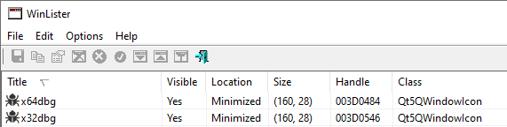

# FindWindow
Search the window class names of open programs on the system.
If a debugger is found, close your program.
The class name is not the title of the window.
You can use a program like Nirsoft's
WinLister to find Window class names.
e.g. x64dbg's class name is
Qt5QWindowIcon## Code
#include <stdio.h>
#include <Windows.h>
/*
Use a program like Nirsoft's winlister to find Window class names.
*/
BOOL FindDebugWindows(void)
{
HANDLE h_window = NULL;
BOOL debugger_found = FALSE;
// array of window class names
char* class_names[] =
{
"Qt5QWindowIcon", // x64dbg, x32dbg, IDA
"OLLYDBG", // ollydbg
"ID" // immunity debugger
};
// loop through array and find windows with that class name
int i = 0;
int class_names_size = sizeof(class_names) / sizeof(class_names[0]);
for (i = 0; i < class_names_size; i++)
{
h_window = FindWindowExA(NULL, NULL, class_names[i], 0);
if (h_window)
{
debugger_found = TRUE;
printf("[!] found %s \n", class_names[i]);
break;
}
}
return debugger_found;
}
int main(void)
{
BOOL debugger_present = FALSE;
debugger_present = FindDebugWindows();
if (debugger_present == TRUE)
return 1;
printf("hey :) \n");
return 0;
}
A NOT GOOD implementation also here. Kept for reference.
•
https://github.com/vectless/vipercheats-loader-source/blob/0c9284aed43ae98d86d2cecb4307a3ed8d73b799/utils.h#L36## Bypass
• Set a breakpoint on FindWindow, single step, then change the return value to 0.
◇ Source:
◇
https://github.com/cetfor/AntiDBG/blob/89f8fb7fb572aae326c2b0538e9e2b2cf56cf102/antidbg/antidbg.c#L109• Hook FindWindow and modify to always return 0?
• Change the name of the window (possible but don't know how atm)